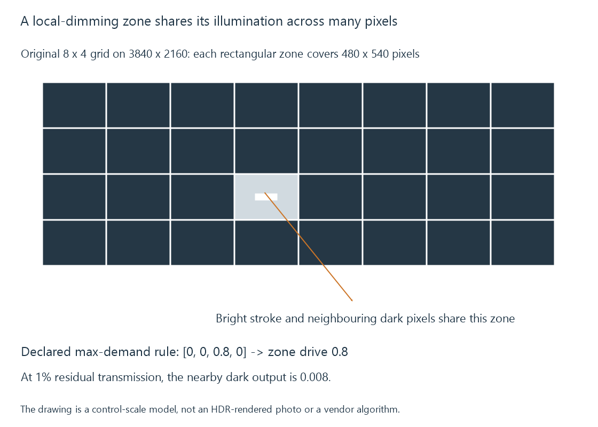

Local dimming and backlight zones
Local dimming adjusts illumination in backlight regions so an LCD can use different light levels across the same picture.
Local dimming lets an LCD backlight illuminate different regions at different levels. Darker regions can receive less light while a bright region receives more.
The LCD pixels still modulate that illumination. Backlight control and pixel control operate at different spatial scales.
A zone covers several picture pixels
A dimming zone is a region with a controllable light contribution. It is not generally one independently controlled source for every picture pixel.
Consider an original eight-by-four zone grid over a 3840 × 2160 picture. Each ideal rectangular zone covers 480 × 540 pixel positions.
A narrow bright subtitle stroke can occupy only part of one zone, but the zone controller must still supply enough light for it. The neighbouring dark pixels then reject the same zone illumination as well as their panel permits.

Real zone shapes and optical spread can differ from this rectangular exercise. Light can also reach beyond the nominal control boundary.
A simple demand model explains blooming
For an invented control rule, let a zone’s drive equal the largest desired normalized light demand among its pixels.
A zone containing demands 0, 0, 0.8, 0 gets drive 0.8. A neighbouring all-dark zone gets drive 0 in this simplified model.
If the LCD’s dark-pixel residual transmission is 1% of zone drive, the dark pixels beside the bright object output 0.008 normalized light. They are brighter than the neighbouring unilluminated zone.
This is a mathematical illustration of a halo-producing relationship. A real controller can smooth, filter or constrain its response; it does not have to use this maximum-demand rule.
Lowering the first zone’s drive reduces its dark leakage but also makes it harder to preserve the bright object. The controller has to choose a compromise across the picture.
Spatial detail and time both matter
Smaller appropriately placed zones can separate a bright object from more surrounding pixels. Yet the panel’s contrast, optical spread and algorithm still influence the result.
A controller also responds over time. If a bright object moves between regions, zone drives can rise and fall. Smoothing those changes may reduce visible pumping, while leaving a moving light footprint.
An aggressive instantaneous change can track the object more tightly but create abrupt brightness changes. Extra zone count does not specify which policy the product uses.
VESA’s HDR performance criteria include patterns that examine local contrast under simultaneous bright and dark content. Those contexts are more informative than a zone number in isolation.
Subtitle composition can change the demand
When an Emby client paints a bright subtitle onto a dark movie, that combined picture becomes the display’s input. The subtitle can therefore affect local-dimming behaviour even though the underlying movie frame has not changed.
A comparison should preserve the same scene, subtitle appearance and display mode. Changing several of those at once makes it difficult to tell whether the visible difference came from source preparation or backlight control.
OLED produces light through emissive elements rather than these LCD backlight zones. Its local emission has a different mechanism, alongside its own whole-screen brightness constraints.